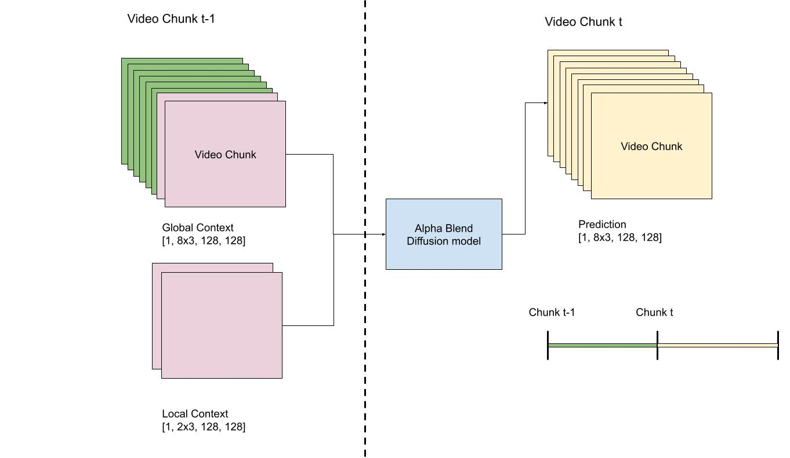
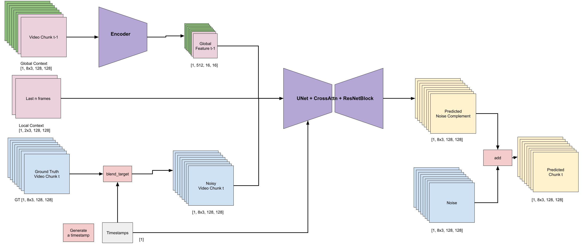
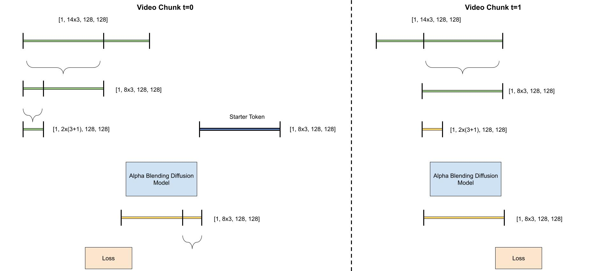
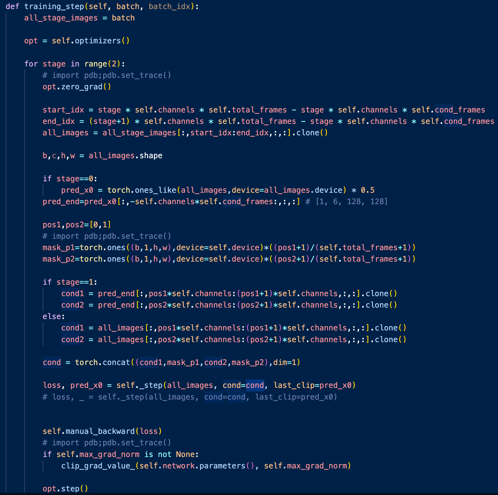
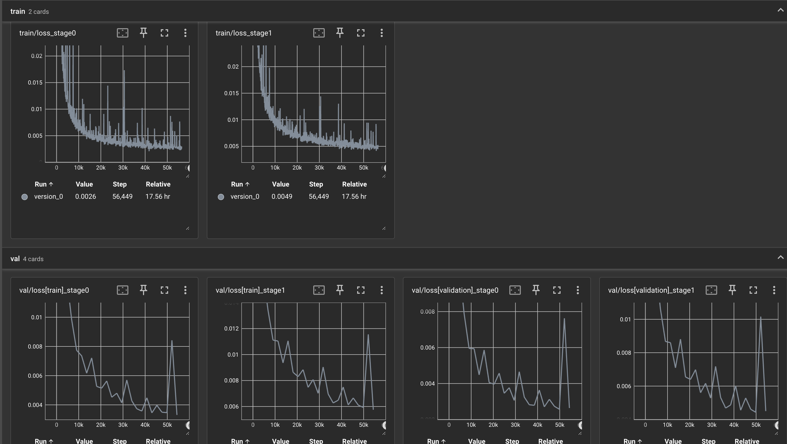

Objective
This paper introduces a novel framework for recursively generating temporally consistent content sequences of 30-second duration using an Alpha Diffusion architecture. By integrating global and local contextual modeling, our approach ensures coherence across temporal scales while maintaining high fidelity in content generation. The global context captures overarching structural patterns, while the local context refines fine-grained details, enabling seamless transitions and long-term consistency. Experimental results demonstrate the effectiveness of the proposed method in producing realistic and temporally stable outputs, outperforming existing baselines in both qualitative and quantitative evaluations. This work advances the state-of-the-art in generative modeling for sequential data, with potential applications in video synthesis, dynamic scene generation, and time-series forecasting.
Challenges
Hypothesis
We can simulate the error-amplification phenomenon by training a model to adapt to its own errors and iteratively refine its outputs, while leveraging multi-scale, fine-grained contextual information to enhance corrective learning.
Dataset
Examples of train and valid sets


Experiments
Setup: 4 H100 GPU
inputs: 2 cond frames from an unseen test set
outputs: 893 generated frames


Simplified Diagrams (in 3 steps)
1. How local and global context information between two consecutive time steps is forwarded to diffusion framework
2. How local and global context information is consumed by the diffusion framework
3. Recursively compute new local and global context between two time steps
Training Logic
Key points:
Schrödinger's cat
inputs: 2 cond frames from an unseen test set + different random seeds
outputs: 3 different generation of 893 frames

The same inputs -> multiple plausible outputs because of different random seeds
Train and validation losses
References
- Iterative 𝛼-(de)Blending: a Minimalist Deterministic Diffusion Model
- Video Diffusion Models with Local-Global Context Guidance